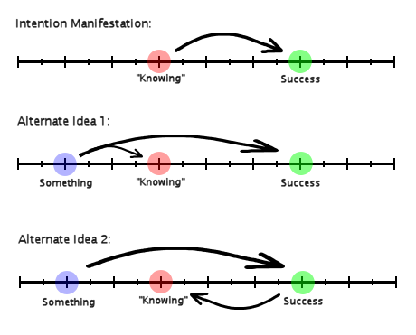

First off - thanks for everyone’s comments. You guys present views that I wouldn’t be able to see otherwise, and it helps.
Let me summarize my previous post, now that I’ve had time to digest everything.
Intention manifestation is slightly flawed. It’s a good model overall, but there is a problem. The problem is that we believe that a “sense of knowing” causes our intention to manifest. Because of that belief, we design our exercises in ways to induce this “sense of knowing” within us. This is incorrect (although it can produce some limited results).
I believe intention manifestation made this problem because it saw that successful people had a “sense of knowing” before they succeeded, so we assumed this “sense of knowing” causes the success. This is a logical fallacy, called Post Hoc. Just because it came before doesn’t mean that it caused it.
One way to explain this is that something happened before the “sense of knowing” came. This something caused the “sense of knowing”, and it also caused the success. Another way to explain it is that something happened before the success, and we have a precognitive facility that sees the success happening, which causes the “sense of knowing”. There could be a million explanations, these are just two alternatives. Here’s a picture:

It is my current understanding that both alternate 1 and alternate 2 could be true at the same time, and that “something” is choice.
Now, I can dance around in the theoretical mind junk mumbo jumbo all I want… what actual changes are made with this altered perspective?
With intention manifestation, our goal is to induce the “sense of knowing”. We can do that with visualization, altering our beliefs, feeling the success, etc. All our techniques stem from inducing a “sense of knowing”. With the alternate ideas, our goal changes… now we need to figure out what that “something” is, and how to do it.
But all hope is not lost. It seems we might have more work to do, but not really. We have a pretty good hint - when we do that “something” correctly, we should experience a “sense of knowing”. Not FORCING it. We should naturally experience it.
So my new technique for winning the lottery has changed. Instead of repeating mantras in my mind about how I’ve won, I’m going to instead alter my number picking strategy. I tried this strategy on the last drawing and had minimal success (nothing crazy or definite). My new strategy is to write down numbers, and see if I feel a “sense of knowing” about them. When I focus on them, do I feel that the numbers are winners? Do I feel confident? Am I sure they will win?
If I don’t feel that confidence, then I tweak the numbers, and try again. And again. And again. Until I feel I’ve optimized my “sense of knowing”. Then I play those numbers.
I will try this new strategy for a month or two, and see how it goes.
June 21st, 2007 at 3:29 pm
Phase 1: Underpants
Phase 2: ???
Phase 3: PROFIT!!
June 21st, 2007 at 4:49 pm
Back when I practiced telepathy regularly (or at least tried), I used that ’sense of knowing’ technique to decide which number my partner was thinking of. When I said each number one at a time in my head, I knew the one that left an ‘echo’ would be right, and in several cases (enough for statistical signifigance) I was right.
If it worked for me, I know it’ll work wonders for you!
June 21st, 2007 at 11:27 pm
I was actually thinking about this today and I have an idea of what the “something” may be; first some short background info. I’m an expert lucid dreamer; I can achieve lucidity any night I want to or even during the day through some very quick meditation. I realized that this was because I’d worked at it enough that the confidence came naturally to me and I found the proper mindset of “knowing” without being consciously aware of it. I knew that I was inducing them by going into this specific mindset/feeling but I didn’t realize this was why. So, the other night I tried to OBE and rather than forcing the feeling I let my mind wander with some pushes in the right direction toward the mindset that would make me OBE naturally. I had a successful exit quite quickly.
It seems to me that by letting yourself find a proper mindset for a task through some meditation, rather than forcing the mindset, you can achieve this state of knowing in a much more efficient way. This makes for some good results. I plan on testing this with more things in my daily life and see how letting myself find the mindsets necessary for tasks instead of forcing them will help things. Basically, I’m saying that the natural feeling of the knowing may be the “something” you’ve illustrated and that forcing it is the what hinders us. Just throwing an idea into the melting pot! Have a good one.
June 22nd, 2007 at 12:15 am
I very nearly came up with this conclusion the morning before I read your long post, well, the lottery part as far as icking numbers. The “metaphysical choice” instigating change was my worldview all along, however you have indeed interested me in a new way of looking at it. I previously belived that in order to “steer” as I call it, I would need to make a conscious choice instead of a superconscious choice. I think I’ll try with this new perspective for awhile and see where it takes me.
It also struck me as weird that we’ve been attempting the same goal: the Megamillions (allthough it is a rather high profile goal. I’ve often wondered if the lottery was a secret government project for ferreting out psychics.)
Care to make a game of it? What say we race to the jackpot? If you don’t care to; drop me an emial and I’ll quit while you’re trying. Although, I will admit I do better in general when competing with other people.
June 22nd, 2007 at 1:30 am
So, basically, you guys are just trying to fuck the system?
I guess its a question of motives. Are you enjoying the journey with an end goal to aim for, or are you focused on the goal and just letting the scenery drift by?
To put it more literally, is this an effort of trying to find out more about reality / manipulation thereof with the possible outcome of winning the lottery; or is it purely focused on winning large sums of cash and if you find out something interesting along the way, fair enough.?
It seems to me that all of this is us trying to play God in some sense. Are we doing it to further our understanding, or are we doing it as a means to our own ends? Because, at least to me, it seems that these subjects should not be treated lightly. And if our entire motive behind it is just some get rich quick scheme… well that’s just wrong.
June 22nd, 2007 at 5:11 am
war1025, I’m pretty sure, that if (or rather when *g*) Sean indeed “fuck[s] the system”, he will do some absolutely amazing things with the well deserved prize. I, for one, am looking forward to it.
June 22nd, 2007 at 5:58 am
RE to Jav…..
Sean Connely’s Institute for Paranormal Studies O_O!!!!!
open it up in SoCal, or at least one branch, so I can go to it and learn
June 22nd, 2007 at 8:44 am
war1025 - Have I ever done something solely for the money? ;-P It’s about the money, but it’s also about the challenge. So, to answer your question: both. Winning the lottery is something that immediately comes to peoples’ minds when they hear about someone claiming to be psychic. “If you’re psychic, why not just win the lottery…” And then the psychic usually stammers off some bullshit answer. I say enough! It’s time to put money where my mouth is.
GoggleHat - Sure, we can compete :-). My dad is also competing with me, although he is playing a different lottery. First to 33 million wins?
June 22nd, 2007 at 12:23 pm
Things are surprisingly less depressing in the morning. Good luck to all involved.
June 22nd, 2007 at 1:40 pm
The lottery is an interesting system of revenue. Not many people understand the purpose of state lotteries. State lotteries were put in place to bring in extra cash for education and other state-wide expenses. (Sometimes in place of actual funding) Even when somebody wins the jackpot, if they choose the cash option, almost half of the lump sum is eaten by taxes. That gets funneled back into the state. When nobody wins, they shave off a portion of what wasn’t won and then adds it to the “pot.” The rest is taken by the state.
I’m not trying to add a righteous spin to pissing away your hard-earned dollars, but one thing to understand: even when somebody wins, the state gets more money. And people have to win every now and then or nobody would play. Why not be the winner for that round? ^__^
On a side note, I just purchased my first round of tickets for this evening’s MegaMillions drawing. I think I have a workable model for me to practice with. Wish me luck!
- Erik
June 23rd, 2007 at 12:02 am
If I won the lottery, I’d buy a Maserati, and a yacht. The yacht is for weekend vacations with all the hotties I would be picking up since I’d be rich.
June 23rd, 2007 at 9:32 am
Actually war1025 according to a psychiatrist I once knew the opposite is true. Were usually depressed in the morning and the depression lessons throughout the day if we are depressed at all.
I have tried this with no success. I’m curious to see how others will do though. But I have also found my intuitions are usually wrong and I am better off choosing things I don’t have a feeling on.
As I stated earlier the Law of Attraction takes time to work. The universe works on a universal time. The bigger the goal and longer it takes. Since your trying to beat what I think is 2 million to one odds you have to consider this a pretty big goal.
June 23rd, 2007 at 10:03 am
Sean, once you figure out “the system” and have the most accurate model of reality that we as humans could possibly create, are you going to make people pay to enter this site and view your information?
Also, I’m not sure, but maybe the lottery is addicting and you should take a break. Not trying to discourage you, but many gamblers had issues with this and it might be that this becomes a negative habit. I’d say that If you start loosing money instead of making profit, it’s time to stop and think about a new strategy of “beating the system”.
The lottery is difficult, because there are only limited resources to actually explore it and find a way to beat it. Once these resources run out (average middle class consumers have maybe 100,000 - 200,000 tickets without running into debt), there comes a point where waiting for “the right feeling” becomes too risky and it’s almost like a game of roulette, where odds are greatly improved compared to lottery, but still risky. This is because there is a lot at stake, but little risk. All that money you wasted on lottery could become profit, or it could be wasted. The odds of winning get larger, but the stakes increase, too!
June 23rd, 2007 at 10:15 am
The ideas in your two posts are pretty interesting for sure, but I just can’t help but think of Erin Pavlina’s ‘restaurant’ representation of the universe. It seems to me that if you do request or choose your own reality through the universe’s help, disappointment and not achieving your goal is the best way for the universe to test your worthiness. I guess what I mean, is the universe seems to test whetherh you want it or really really want it. You have to tell the universe you are completely serious by showing persistence and dedication.
Certain intentions just take more time than others. When you said you won $70 from those lottery tickets, you originally wanted $100. What if that was just the beginning, a sign saying we know you want $100 but since this is a gradual build up process we’re gonna give you $70 for now.
Don’t you think you’ve ruined your chances now by being pissed off and thinking negatively? Maybe if you didn’t get angry by now you might have $100 or in a week from now, or a few weeks. Who knows. I think to really give the traditional intention manifestation model a chance you need to be diligent, persistent and dedicated.
June 23rd, 2007 at 11:05 am
dragonfly - I don’t see how winning the jackpot is a big goal. It’s just numbers. From a reality/universal perspective… it’s just 6 numbers. Now, to humans those 6 numbers mean a lot, but I don’t see how that is “big” in the universe’s eyes.
ClearVision - Why would I charge people to view my site? If I won the jackpot, getting more money would be the last thing on my mind. One reason I stopped doing scratch off tickets was to prevent getting addicted. Keep in mind that from my winnings, I’m still at $25 profit, so this obsession isn’t costing me any money… just lots of mental energy and spare time (which I have plenty of). If I have to play 200,000 tickets, then I’ll think twice. So far I’ve played 22. So I think I can spare a few more :-P.
YoYo - Perhaps. If I feel angry, what’s wrong with feeling angry? I’d rather be aware of being pissed off, than police my own thoughts constantly to “Think happy thoughts!!”. I may go back to the intention manifestation model if my current strategy doesn’t pan out, but so far I’m happy with my new strategy, and I’m going to keep at it for another month or two. This path feels more correct than my old path. We shall see if it produces results. I’ll have to check out Erin’s post that you mentioned.
Thanks!
June 23rd, 2007 at 11:43 am
Lol. well good luck and if it works out I’d definitely want to hear more about your experiment.
with my own experiences with IM and LOA, i’ve not been successful but i also know i havent been successful because i havent given it enough time and enough positivity.
btw, erin’s post is actually a podcast. http://www.stevepavlina.com/blog/2006/10/stevepavlinacom-podcast-017-placing-your-order-with-the-universe/
June 24th, 2007 at 12:18 am
true… “knowing” could be just another form of precog or coincidance. Its been proven that if you shoot a basketball and want to make it in the hoop its best to visualize on the ball making it in (the target,) or the trajectory of the ball rather than the act of throwing. You dont focus on moving every single muscle in perfect synchrony, just the general motion and you never realy understand what goes on in your head. I’d say intention manifestation would be similar to this in that maybe its just a technique that simplifies the overly complicated act of manipulating reality. I think you said this in the last entry but in other words. In theory its the other side of precog, fabricating a future event via a though versus fabricating a thought via a future event.
June 24th, 2007 at 11:32 am
There are thousands of number combinations, can you write them all and check before ? lots of work because if you skip one combo it might be the one with even bigger sense of knowing
because if you skip one combo it might be the one with even bigger sense of knowing
June 24th, 2007 at 10:52 pm
obsidian: you’re absolutely right with that. i’m a tennis player and they even teach beginners visualization. you need a good visual, you need to stay positive, focus and in the zone. the ‘in the zone’ part is where you are completely mindless and you just follow your instincts and subconscious completely.
kinda like with samurais; you are supposed to have no mind; you follow the tao or great spirit. aka your sub
June 25th, 2007 at 10:30 am
Sean-I don’t see how winning the jackpot is a big goal. It’s just numbers. From a reality/universal perspective… it’s just 6 numbers. Now, to humans those 6 numbers mean a lot, but I don’t see how that is “big” in the universe’s eyes.
The reason those 6 little numbers area big goal is because of what they represent. 6 little numbers may seem like just 6 little numbers but getting them on a ticket you hold in your hand represents significant change in your sphere and thats what makes them a big goal.
The reasons its not wise to get angry and frustrated is because that anger and frustration just brings you more anger and frustration. You will attract more of what feeling.
June 25th, 2007 at 6:19 pm
Hey Sean, all this luck with your pre-termed (back in the good old days, then the not-so-good old days…) “micro-TK/PK”, anything going to happen with moving objects now?
June 25th, 2007 at 9:11 pm
With intention manifestation, our goal is to induce the “sense of knowing”. We can do that with visualization, altering our beliefs, feeling the success, etc.
^^ sorry to bring this up, but :
exactly like psionics. You can visualize all you want, but if you don’t actually use psi, nothing will happen. Sure it helps, but it doesn’t do the job.
June 26th, 2007 at 1:47 am
Well good luck on the lottery.
I think you will get it.
- hotfoot982
June 27th, 2007 at 9:45 am
This reminds me of a Bulgarian joke:
There once was a lazy man. He was very poor and had nothing to eat. One day, he went to church to pray to God. He kneels and prays, “Please, dear God, in the heavens above, help me win the lottery.” Surprisingly, God comes down and tells the poor man, “Ok. You will win the lottery!” Happy, the man goes back home and waits to win the lottery. After two weeks, he still hasn’t won the lottery, so he goes back to the church and asks, “God, why haven’t I won the lottery yet?” A heavenly voice responds, “Well, it would help if you bought a ticket…”
June 27th, 2007 at 11:05 pm
I have been following all your posts on this topic, and I have a question.. I know of something that a lot call the ‘law of attraction’, and this sounds a lot like this. How is this different, or is it different?
November 7th, 2007 at 7:37 pm
Hi Guys!
I am new to this comment place andthis is my first post! Psycick abilities are very interesting and i have started to study them!
November 7th, 2007 at 7:39 pm
THe law of attraction is a lot different to me. This is focusing on what you want. This is more dedicated to me. The law of attraction just says: “I if you wish for it you shall recieve” That to me is hogwash.